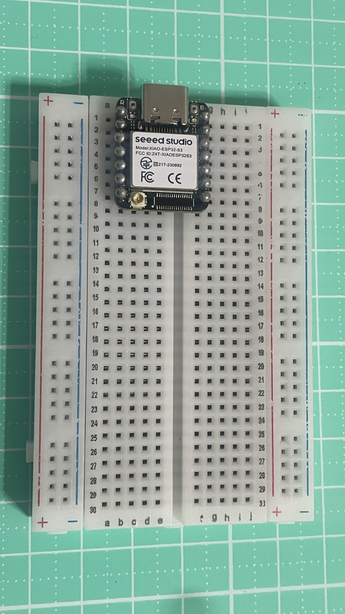
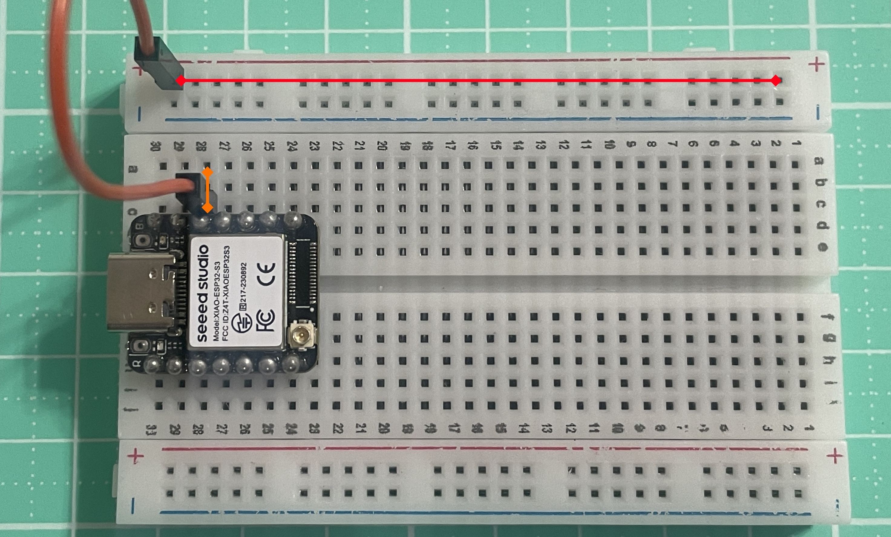
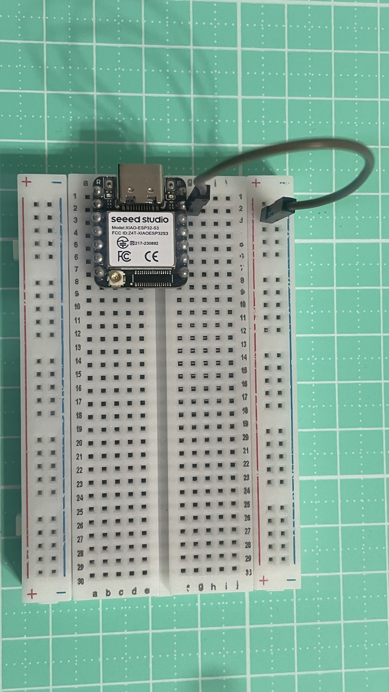

將 ESP32 對準麵包板中央的凹槽插入，
確保左右兩排腳位不會短路，且每一隻腳都有獨立的插孔。

⚠️ 注意：如果 ESP32 插歪或壓在同一排孔位，可能會導致短路或無法運作。
正極（+）電源軌相通說明
- 麵包板上通常會標示紅線（+），代表正極電源軌。
- 同一條紅線上的插孔在橫向是相通的。
- 如下圖，紅線(橫向)跟橘線(縱向)都是3V3。

負極（– / GND）電源軌相通說明
- 藍線代表負極（GND）。
- 同一條藍線上的插孔在橫向是相通的。
- 如下圖，藍線(橫向)跟(縱向)都是GND。

🔧 重要觀念：
所有模組與 ESP32 的 GND 必須「共地」，
否則訊號可能會異常。